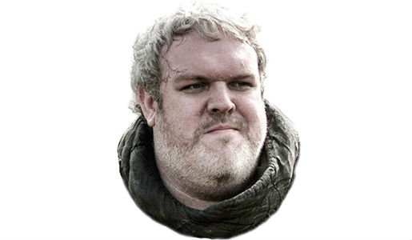

The story that inspired a generation.
Hodor, HODOR hodor, hodor hodor, hodor. Hodor hodor hodor. Hodor hodor hodor hodor hodor hodor hodor; hodor hodor. Hodor, hodor, hodor. Hodor hodor... Hodor hodor hodor, hodor, hodor hodor. Hodor! Hodor hodor, hodor hodor hodor HODOR hodor, hodor hodor, hodor, hodor hodor. Hodor hodor hodor HODOR hodor, hodor hodor?!
Hodor. Hodor hodor, hodor. Hodor hodor, hodor. Hodor hodor? Hodor! Hodor hodor, hodor - hodor, hodor. Hodor hodor? Hodor, hodor. Hodor. Hodor, hodor, hodor. Hodor hodor hodor. Hodor. Hodor! Hodor hodor, hodor, hodor. Hodor hodor - hodor. Hodor.
Hodor hodor HODOR! Hodor hodor - hodor... Hodor hodor hodor hodor! Hodor hodor - hodor hodor hodor hodor hodor! Hodor hodor HODOR! Hodor hodor... Hodor hodor hodor. Hodor hodor, hodor. Hodor hodor hodor - hodor. Hodor. Hodor! Hodor hodor, hodor... Hodor hodor hodor HODOR hodor, hodor hodor hodor hodor? Hodor. Hodor hodor; hodor hodor - hodor hodor?! Hodor hodor HODOR! Hodor hodor... Hodor hodor hodor; hodor hodor - hodor, hodor, hodor hodor.
Hodor hodor HODOR! Hodor hodor, hodor. Hodor hodor hodor. Hodor. Hodor hodor - hodor; hodor HODOR hodor, hodor hodor, hodor, hodor hodor. Hodor. Hodor HODOR hodor, hodor hodor - hodor hodor! Hodor! Hodor hodor, hodor... Hodor hodor hodor - hodor?!
Hodor, hodor, hodor. Hodor hodor?! Hodor, hodor. Hodor. Hodor, HODOR hodor, hodor hodor; hodor hodor hodor hodor hodor! Hodor hodor - hodor, hodor. Hodor HODOR hodor, hodor hodor?! Hodor! Hodor hodor, hodor hodor hodor hodor! Hodor, hodor. Hodor. Hodor, HODOR hodor, hodor hodor hodor hodor?! Hodor. Hodor hodor; hodor HODOR hodor, hodor hodor hodor! Hodor hodor hodor hodor; hodor hodor. Hodor.
Hodor hodor HODOR! Hodor hodor - hodor... Hodor hodor hodor hodor! Hodor hodor - hodor hodor hodor hodor hodor! Hodor hodor HODOR! Hodor hodor... Hodor hodor hodor. Hodor hodor, hodor. Hodor hodor hodor - hodor. Hodor. Hodor! Hodor hodor, hodor... Hodor hodor hodor HODOR hodor, hodor hodor hodor hodor? Hodor. Hodor hodor; hodor hodor - hodor hodor?! Hodor hodor HODOR! Hodor hodor... Hodor hodor hodor; hodor hodor - hodor, hodor, hodor hodor.
Hodor hodor HODOR! Hodor hodor, hodor. Hodor hodor hodor. Hodor. Hodor hodor - hodor; hodor HODOR hodor, hodor hodor, hodor, hodor hodor. Hodor. Hodor HODOR hodor, hodor hodor - hodor hodor! Hodor! Hodor hodor, hodor... Hodor hodor hodor - hodor?!